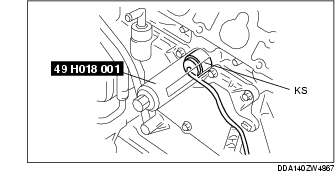

Knock sensor (KS) removal/installation [ZY]
1. Disconnect the negative battery cable.
2. Remove the following part for easier access.
- • Intake manifold (See INTAKE-AIR SYSTEM REMOVAL/INSTALLATION [ZY].)
3. Disconnect the KS connector.
4. Install the SST to the KS.

5. Remove the KS installation bolt, then remove the KS.
6. Install in the reverse order of removal.
Tightening torque